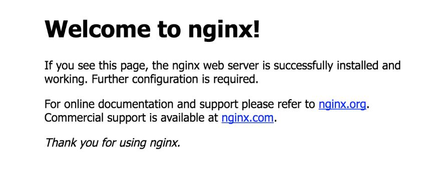

⚠
本文内容已过期 / This post is outdated ⚠
0x00 前置
最近终于搞好了自己的个人博客，顺便就写一篇这方面的教程。
材料： 一台云服务器（我用的腾讯云），一个域名，XShell.
顺便一提，我服务器的系统是 Ubuntu14.04 /*原本这篇文章是用 HTML
写的，后来给博客加上了 MD
编辑器后这篇的排版就炸了,现在那个代码高亮的模块也弄得我很迷，麻烦各位观众老爷将就着看吧*/
0x10 配置数据库
0x11 安装 mysql
首先用 XShell，输入外网
IP，用户名和密码连到服务器，在安装之前，最好更新下软件源列表。更新命令如下：
1 $ sudo apt-get install mysql-server mysql-client
安装完成后，MySQL 服务器会自动启动。
mysql 数据库安装后的根目录在：
/etc/mysql/
0x12 通过命令行客户端访问 MySQL
我们检查 MySQL 服务器程序
1 2 3 4 5 6 7 8 9 10 11 12 13 14 15 16 17 18 19 20 21 22 23 24 25 26 27 28 #检查MySQL服务器系统进程 $ ps -aux|grep mysql mysql 837 0.0 6.1 891864 62856 ? Ssl Apr07 0:27 /usr/sbin/mysqld ubuntu 26813 0.0 0.0 10460 928 pts/0 S+ 16:35 0:00 grep --color=auto mysql #检查MySQL服务器占用端口 $ netstat -nlt|grep 3306 tcp 0 0 127.0.0.1:3306 0.0.0.0:* LISTEN #通过启动命令检查MySQL服务器状态 $ sudo /etc/init.d/mysql status Copyright (c) 2000, 2016, Oracle and/or its affiliates. All rights reserved. Oracle is a registered trademark of Oracle Corporation and/or its affiliates. Other names may be trademarks of their respective owners. Server version 5.5.54-0ubuntu0.14.04.1 Protocol version 10 Connection Localhost via UNIX socket UNIX socket /var/run/mysqld/mysqld.sock Uptime: 1 day 1 hour 41 min 0 sec Threads: 1 Questions: 74537 Slow queries: 0 Opens: 62 Flush tables: 1 Open tables: 55 Queries per second avg: 0.806 #通过系统服务命令检查MySQL服务器状态 $ service mysql status mysql start/running, process 837
使用用户名和密码，登陆服务器
1 2 3 4 5 6 7 8 9 10 11 12 13 14 15 16 $ mysql -uroot -p Enter password: Welcome to the MySQL monitor. Commands end with ; or g. Your MySQL connection id is 3543 Server version: 5.5.54-0ubuntu0.14.04.1 (Ubuntu) Copyright (c) 2000, 2016, Oracle and/or its affiliates. All rights reserved. Oracle is a registered trademark of Oracle Corporation and/or its affiliates. Other names may be trademarks of their respective owners. Type 'help;' or 'h' for help. Type 'c' to clear the current input statement. mysql>
MySQL 的一些简单的命令操作。
1 2 3 4 5 6 7 8 9 10 11 12 13 14 15 16 17 18 19 20 21 22 23 24 25 26 27 28 29 30 31 32 33 34 35 36 37 38 39 40 41 42 43 44 45 46 47 48 49 50 51 52 53 54 55 56 57 58 59 60 61 62 63 64 65 66 67 68 69 70 71 72 73 74 75 76 77 78 79 80 81 #查看所有的数据库 mysql> show databases; +--------------------+ | Database | +--------------------+ | information_schema | | kira | | mysql | | performance_schema | +--------------------+ 4 rows in set (0.00 sec) #切换到information_schema库 mysql> use information_schema; Reading table information for completion of table and column names You can turn off this feature to get a quicker startup with -A Database changed #查看information_schema库中所有的表 mysql> show tables; +---------------------------------------+ | Tables_in_information_schema | +---------------------------------------+ | CHARACTER_SETS | | COLLATIONS | | COLLATION_CHARACTER_SET_APPLICABILITY | | COLUMNS | | COLUMN_PRIVILEGES | | ENGINES | | EVENTS | | FILES | | GLOBAL_STATUS | | GLOBAL_VARIABLES | | KEY_COLUMN_USAGE | | PARAMETERS | | PARTITIONS | | PLUGINS | | PROCESSLIST | | PROFILING | | REFERENTIAL_CONSTRAINTS | | ROUTINES | | SCHEMATA | | SCHEMA_PRIVILEGES | | SESSION_STATUS | | SESSION_VARIABLES | | STATISTICS | | TABLES | | TABLESPACES | | TABLE_CONSTRAINTS | | TABLE_PRIVILEGES | | TRIGGERS | | USER_PRIVILEGES | | VIEWS | | INNODB_BUFFER_PAGE | | INNODB_TRX | | INNODB_BUFFER_POOL_STATS | | INNODB_LOCK_WAITS | | INNODB_CMPMEM | | INNODB_CMP | | INNODB_LOCKS | | INNODB_CMPMEM_RESET | | INNODB_CMP_RESET | | INNODB_BUFFER_PAGE_LRU | +---------------------------------------+ 40 rows in set (0.00 sec) # 查看数据库的字符集编码 mysql> show variables like '%char%'; +--------------------------+----------------------------+ | Variable_name | Value | +--------------------------+----------------------------+ | character_set_client | utf8 | | character_set_connection | utf8 | | character_set_database | utf8 | | character_set_filesystem | binary | | character_set_results | utf8 | | character_set_server | latin1 | | character_set_system | utf8 | | character_sets_dir | /usr/share/mysql/charsets/ | +--------------------------+----------------------------+ 8 rows in set (0.00 sec)
接下来，我需要做一些配置，让 MySQL 符合基本的开发要求。
0x13 修改 MySQL 服务器的配置
默认情况下，MySQL 的字符集是
latin1，因此在存储中文的时候，会出现乱码的情况，所以我们需要把字符集统一改成
UTF-8。
用 vim 打开 MySQL 服务器的配置文件 my.cnf
1 2 3 4 5 6 7 8 9 10 $ sudo vim /etc/mysql/my.cnf #在[client]标签下，增加客户端的字符编码 [client] default-character-set=utf8 #在[mysqld]标签下，增加服务器端的字符编码 [mysqld] character-set-server=utf8 collation-server=utf8_general_ci
给没有用过 vim
的小伙伴留几条常用命令
命令
功能
i
进入insert模式
o
新开一行
esc
关闭insert模式
shift+:
进入命令行模式
在命令行模式下
命令
功能
:w
保存
:wq
保存并关闭
:q
关闭（已保存）
:q!
强制关闭
默认情况下，MySQL
服务器不允许远程访问，只允许本机访问，所以我们需要设置打开远程访问的功能。
用 vim 打开 MySQL 服务器的配置文件 my.cnf 1 2 3 4 $ sudo vim /etc/mysql/my.cnf #注释bind-address #bind-address = 127.0.0.1
1 $ sudo /etc/init.d/mysql restart
1 2 3 4 5 6 7 8 9 10 11 12 13 14 15 16 $ mysql -uroot -p Enter password: Welcome to the MySQL monitor. Commands end with ; or g. Your MySQL connection id is 3543 Server version: 5.5.54-0ubuntu0.14.04.1 (Ubuntu) Copyright (c) 2000, 2016, Oracle and/or its affiliates. All rights reserved. Oracle is a registered trademark of Oracle Corporation and/or its affiliates. Other names may be trademarks of their respective owners. Type 'help;' or 'h' for help. Type 'c' to clear the current input statement. mysql>
1 2 3 #检查MySQL服务器占用端口 $ netstat -nlt|grep 3306 tcp 0 0 0.0.0.0:3306 0.0.0.0:* LISTEN
通过 root
账号远程访问，是非常不安全的操作，因此我们下一步，将新建一个数据库，再新建一个用户进行远程访问。
0x14 新建数据库并设置访问账号
通过 root 账号登陆 MySQL 服务器
1 2 3 4 5 6 7 8 9 10 11 12 13 14 15 16 17 18 19 20 21 22 23 24 25 26 27 28 29 30 31 32 $ mysql -uroot -p Enter password: Welcome to the MySQL monitor. Commands end with ; or g. Your MySQL connection id is 3543 Server version: 5.5.54-0ubuntu0.14.04.1 (Ubuntu) Copyright (c) 2000, 2016, Oracle and/or its affiliates. All rights reserved. Oracle is a registered trademark of Oracle Corporation and/or its affiliates. Other names may be trademarks of their respective owners. Type 'help;' or 'h' for help. Type 'c' to clear the current input statement. #新建数据库user mysql> CREATE DATABASE user; #使用数据库user mysql> use user; Database changed #在数据库user中，新建一张表a1 mysql> create table a1(id int primary key,name varchar(32) not null); Query OK, 0 rows affected (0.05 sec) #新建guest用户，密码为guest，允许guest可以远程访问user数据库，授权guest对user所有数据库的权限 mysql> GRANT ALL ON user.* to guest@'%' IDENTIFIED BY 'guest'; Query OK, 0 rows affected (0.00 sec) #允许guest可以本地访问user数据库，授权guest对user所有数据库的权限 mysql> GRANT ALL ON user.* to guest@localhost IDENTIFIED BY 'guest'; Query OK, 0 rows affected (0.00 sec)
之后你可以在本地登录guest账号操作你的数据库(就像之前操作information_schema库一样)
0x15 检查数据库是否正常连通
1 2 3 4 5 6 7 8 9 10 11 12 13 14 15 $ mysql -uguest -p -h 服务器外网IP Enter password: Welcome to the MySQL monitor. Commands end with ; or g. Your MySQL connection id is 3676 Server version: 5.5.54-0ubuntu0.14.04.1 (Ubuntu) Copyright (c) 2000, 2016, Oracle and/or its affiliates. All rights reserved. Oracle is a registered trademark of Oracle Corporation and/or its affiliates. Other names may be trademarks of their respective owners. Type 'help;' or 'h' for help. Type 'c' to clear the current input statement. mysql>
数据库的配置到这里就基本完成了
0x20 配置服务器
0x21 配置环境
切到 root 用户下
安装Nginx
验证 Nginx 是否安装成功
浏览器中输入外网IP，看到如下页面

安装PHP执行环境
1 # apt-get install php5-fpm
安装PHP MySQL扩展
1 # apt-get install php5-mysql
0x22 获取 WordPress
1 2 3 4 5 6 7 # wget http://download-10012769.cos.myqcloud.com/wordpress-4.5.3-zh_CN.tar.gz // 创建web service工作目录 # mkdir /var/www // 将wordpress源码解压到web service 工作目录 # tar -xzf wordpress-4.5.3-zh_CN.tar.gz -C /var/www // 修改目录权限 # chown -R www-data:www-data /var/www/wordpress
配置 Nginx
1 2 3 # wget -O echo.sh http://yepscript.com/qcloud-wordpress # bash echo.sh
在弹出提示
Please Input Your
Doamin 时，输入云服务器的外网 IP，并按回车。
创建完成后，执行
service nginx reload 重新加载配置文件
重启web service和php-fpm
1 2 # service nginx restart # service php5-fpm restart
0x30 安装配置 WordPress
在浏览器中访问你的服务器的 IP，
点击下一步安装，输入你的数据库信息(就是你之前新建的那个用户和数据库)，然后点击下一步安装
当你看到这个的时候，你的 WordPress
站点就已经建成了。Congratulations！
不过别急，我们还需要把它挂到我们的域名上面。
0x40 设置域名解析
首先找到你购买域名的服务商，进入域名解析的页面。
将记录类型设置为 A (将域名指向一个 IPv4 地址，例如：8.8.8.8)
主机记录根据自己的需要来填，不知道填什么的话可以填 www
记录值设置为服务器外网 IP
TTL 一般设为 10 分钟。
这样就大功告成了